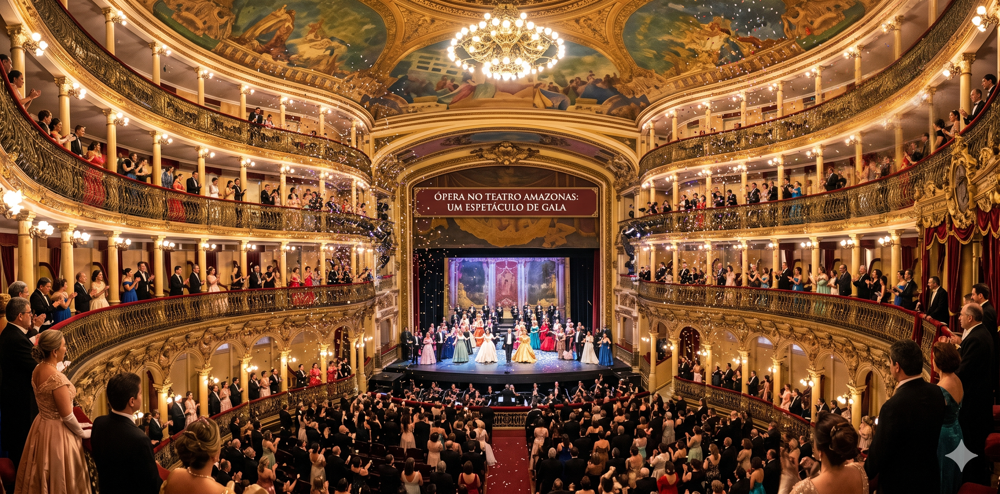

Quem Somos
Informação com a alma e a força da nossa terra.

O Portal Manauara nasceu do desejo de conectar os moradores de Manaus e de todo o Amazonas com o que há de mais relevante em nossa região. Somos mais do que um site de notícias; somos um guia para quem vive, trabalha e se encanta com a capital da Amazônia.
Nossa equipe é formada por profissionais apaixonados pela região, comprometidos com a ética jornalística e com a agilidade que os tempos modernos exigem. Do "hard news" policial e político à leveza das dicas de flutuantes e gastronomia local, nosso compromisso é com a verdade e com o povo manauara.
Nossa História
Fundado em 2024, o portal surgiu para preencher uma lacuna de informação local que une a utilidade pública (como o nível do Rio Negro e trânsito) com a cobertura cultural vibrante do nosso estado.
Missão
Informar com precisão, valorizando a identidade cultural de Manaus e promovendo a cidadania.
Visão
Ser a maior referência de conteúdo digital em Manaus, reconhecido pela inovação e proximidade com o leitor.
Valores
Transparência, regionalismo, inovação tecnológica e responsabilidade social.